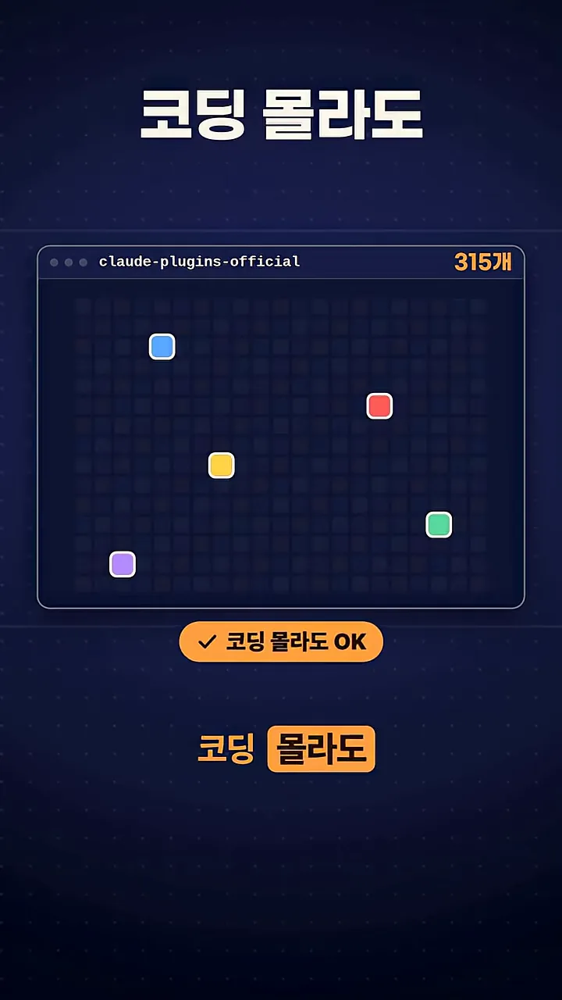
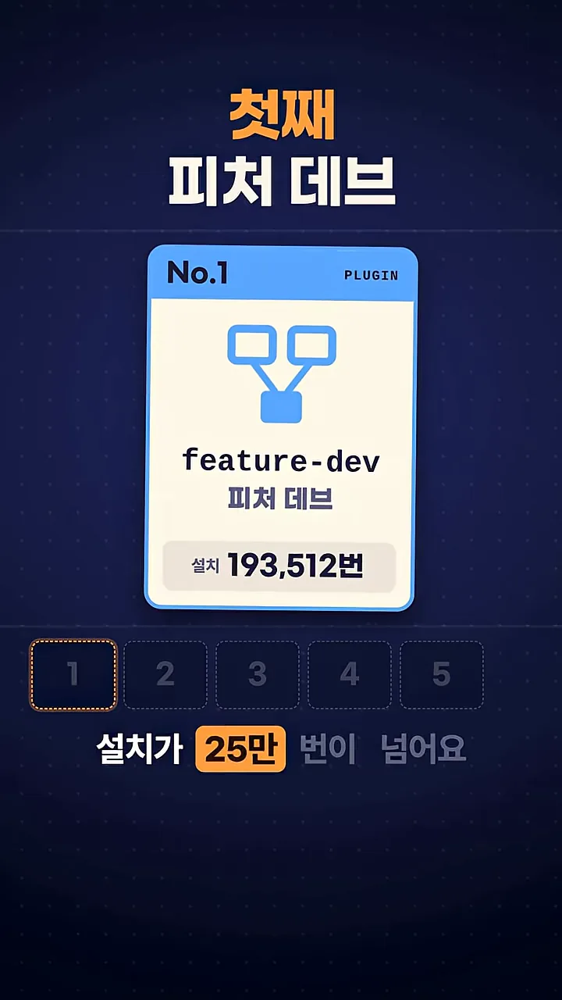
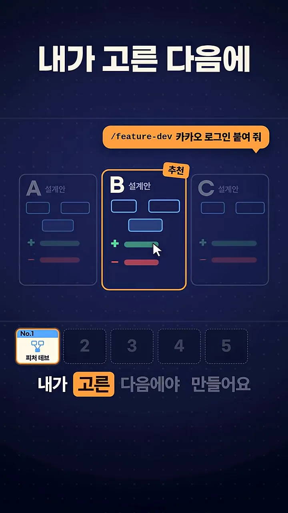
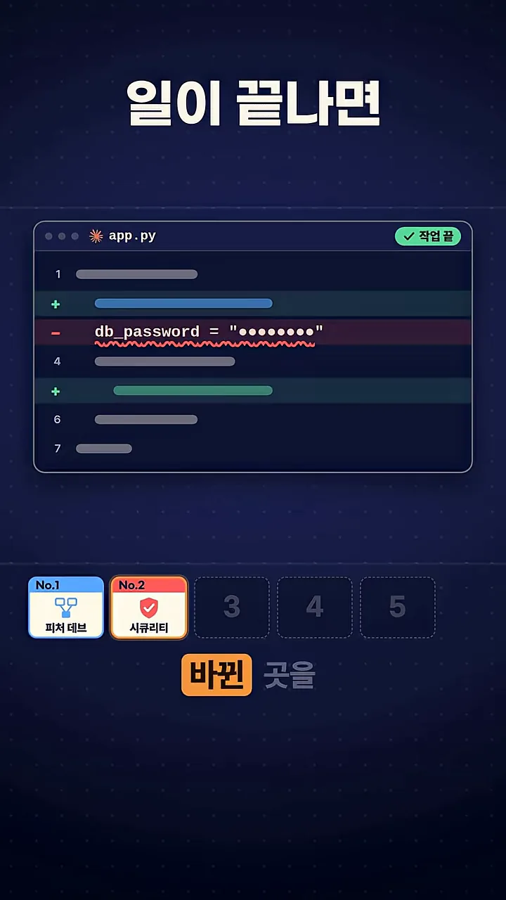
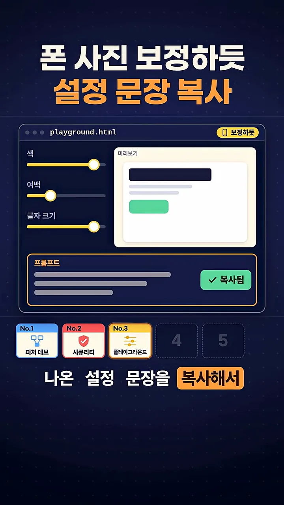
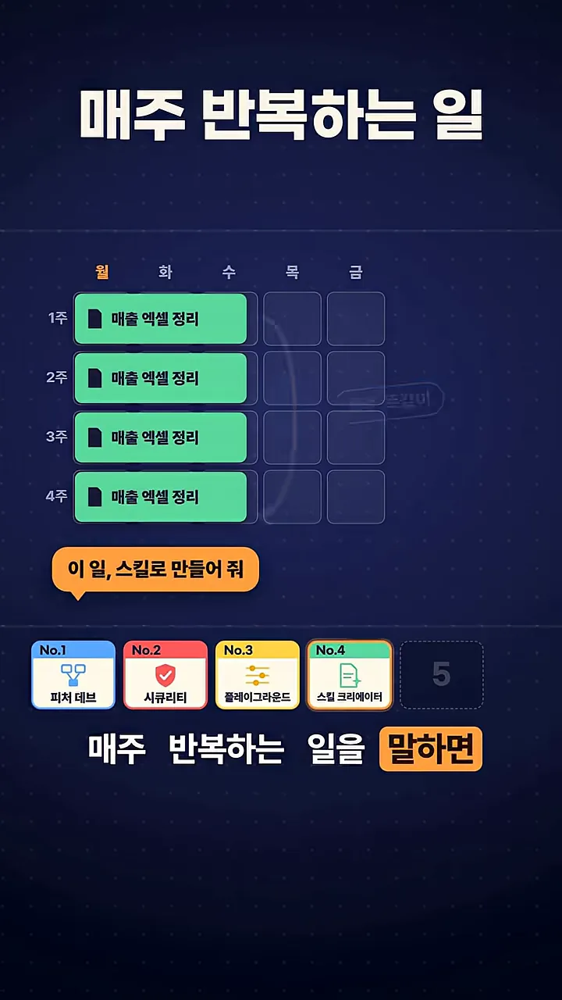
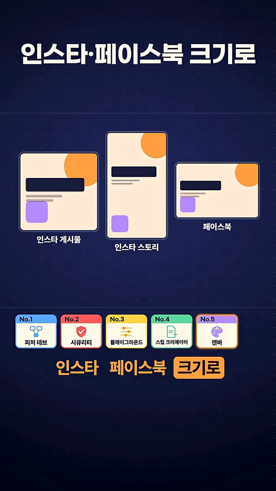
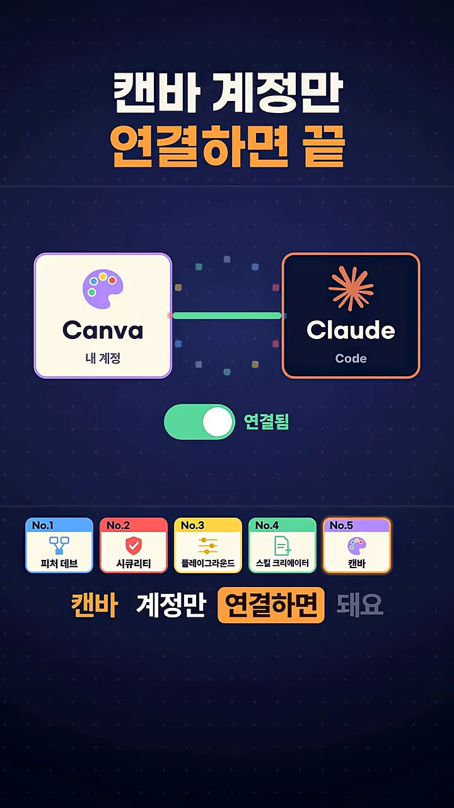
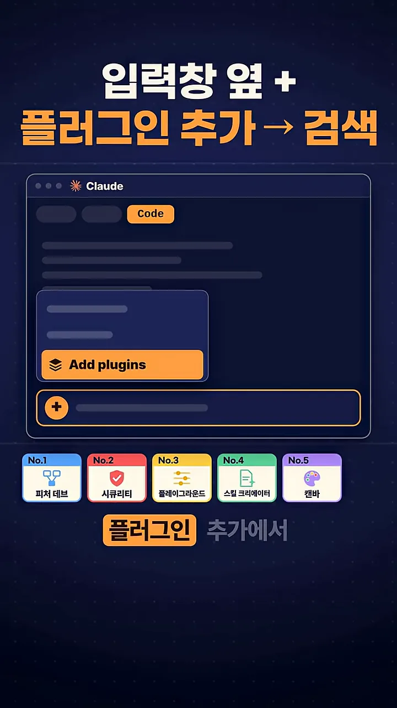
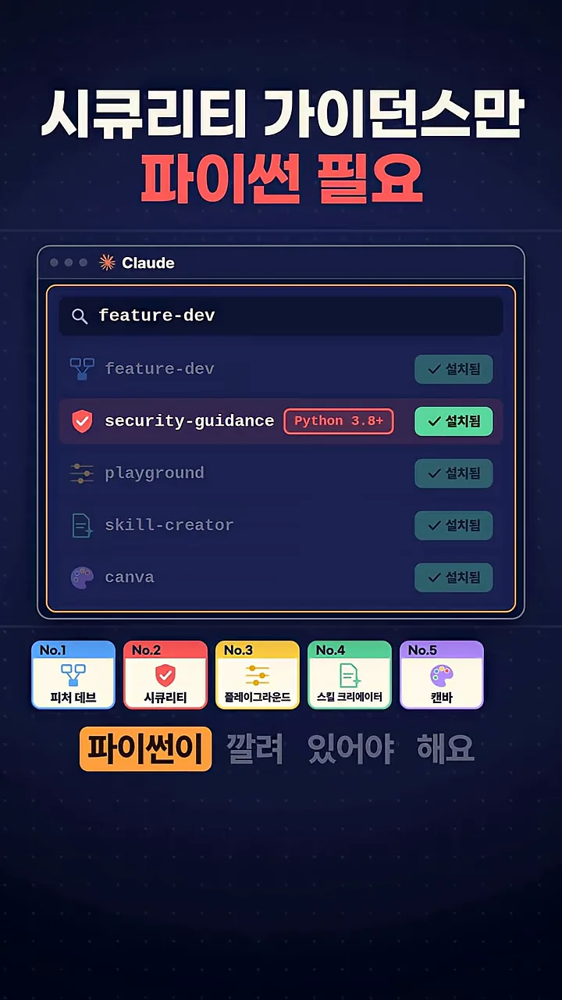

개발을 맡길 때 쓰는 두 가지
영상은 클로드 코드 공식 마켓플레이스 화면부터 띄워요. 창 이름이 claude-plugins-official이고, 오른쪽 위에 315개라는 숫자가 있어요. 칸 수백 개 중 색이 칠해진 건 몇 개뿐이에요. 이 많은 플러그인 가운데 코딩을 몰라도 쓸 수 있는 다섯 개만 골랐다는 뜻이에요.

feature-dev: 짜기 전에 설계안부터 고르게 해요
첫 번째는 feature-dev(피처 데브)예요. 말로는 설치 수가 25만 번이 넘는다고 해요. 그런데 화면의 No.1 카드에는 설치 193,512번이 적혀 있어서 두 숫자가 달라요.

이 플러그인의 핵심은 순서예요. 위쪽 말풍선처럼 /feature-dev 카카오 로그인 붙여 줘라고 시켜도 바로 코드를 짜지 않아요. 설계안 A, B, C 세 장을 나란히 펼치고 그중 B에 '추천' 표시를 붙여요. 내가 B를 누른 다음에야 'B로 구현' 단계로 넘어가요.

security-guidance: 위험한 코드를 바로 잡아요
두 번째는 security-guidance(시큐리티 가이던스)예요. 이것도 설치가 24만 번이에요. 화면 카드에는 241,800번으로 나와요. 클로드가 비밀번호를 코드에 그대로 박아 넣는 식의 위험한 코드를 쓰면 그 자리에서 경고하고, 일이 끝나면 바뀐 곳을 한 번 더 검사해요.
아래 화면이 그 두 번째 검사 장면이에요. app.py의 3번 줄 db_password = "••••••••"가 빨간 물결 밑줄과 함께 빨간 줄로 표시돼 있어요. 비밀번호를 코드에 직접 적은 하드코딩이라서요. 오른쪽 위에는 '작업 끝' 배지가 있고, 새로 바뀐 줄은 초록색 +로 표시돼 있어요.

디자인, 반복 일, 캔바
playground: 조절판으로 디자인을 골라요
세 번째 playground(플레이그라운드)는 말로 설명하기 힘든 디자인을 조절판 달린 화면으로 만들어 줘요. 아래 화면은 playground.html이라는 페이지 하나예요. 왼쪽에 색, 여백, 글자 크기 슬라이더가 있고, 오른쪽 미리보기가 슬라이더를 따라 바뀌어요. 영상은 이걸 폰 사진 보정에 비유해요.
마음에 드는 모습이 나오면 아래 '프롬프트' 칸에 지금 설정을 글로 옮긴 문장이 생겨요. 오른쪽 버튼으로 복사해서 클로드에게 다시 시키면 돼요. 화면에서는 버튼이 '복사됨'으로 바뀌어 있어요.

skill-creator: 반복하는 일을 스킬로 만들어요
네 번째 skill-creator(스킬 크리에이터)는 매주 반복하는 일을 말로 설명하면 나만의 스킬로 만들어 줘요. 화면의 달력에는 1주부터 4주까지 월요일마다 '매출 엑셀 정리'가 반복돼요. 아래 말풍선처럼 "이 일, 스킬로 만들어 줘"라고 하면 돼요.

canva: 캔바 디자인을 말로 고쳐요
다섯 번째는 영상 처음에 '사장님들이 제일 좋아하실 거'라고 예고한 canva(캔바)예요. "제목 더 크게 해 줘"처럼 말로 캔바 디자인을 고치고, 승인하면 반영돼요. 만든 디자인을 SNS 크기에 맞춰 한 번에 바꿔 주는 것도 할 수 있어요. 아래 화면에 같은 디자인이 인스타 게시물, 인스타 스토리, 페이스북 크기로 세 장 나란히 있어요.

준비할 건 캔바 계정 연결 하나예요. 화면에서 왼쪽 Canva '내 계정'과 오른쪽 Claude Code가 선으로 이어지고, 아래 스위치가 '연결됨'으로 켜져 있어요.

설치는 데스크톱 앱에서
설치는 터미널 없이 클로드 데스크톱 앱에서 끝나요. 영상이 보여 준 순서는 이래요.
- 데스크톱 앱에서 Code 탭을 열어요 — 창 위쪽 탭 중 주황색 Code예요.
- 입력창 옆 + 를 누르고 Add plugins를 골라요 플러그인을 찾는 창이 열려요
- 플러그인 이름으로 검색해서 설치해요 목록 오른쪽에 '설치됨'이 떠요
첫 화면에서는 위쪽 탭 줄의 주황색 Code 탭과 아래 입력창 왼쪽의 + 버튼을 보면 돼요.
+ 를 누르면 작은 메뉴가 위로 열리고, 맨 아래 주황색 'Add plugins'를 누르면 돼요.

마지막 화면은 다섯 개를 모두 설치한 목록이에요. 이 중 security-guidance 줄에만 빨간 'Python 3.8+' 표시가 붙어 있어요. 다섯 개 중 이것만 파이썬이 깔려 있어야 한다는 뜻이에요.

다섯 개를 한눈에 정리하면 이래요.
| 플러그인 | 하는 일 | 준비물 |
|---|---|---|
| feature-dev | 기능을 붙이기 전에 설계안 두세 개를 비교하고, 내가 고른 안으로 만들어요 | 없음 |
| security-guidance | 위험한 코드를 바로 경고하고, 일이 끝나면 바뀐 곳을 다시 검사해요 | 파이썬 |
| playground | 디자인을 조절판 화면으로 만들고, 고른 설정을 문장으로 줘요 | 없음 |
| skill-creator | 매주 반복하는 일을 나만의 스킬로 만들어요 | 없음 |
| canva | 캔바 디자인을 말로 고치고 인스타·페이스북 크기로 한 번에 바꿔요 | 캔바 계정 연결 |